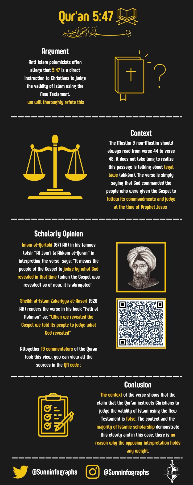

https://m.youtube.com/watch?v=d6XOyw9tHVI

Ibn Abbaas said in his commentary on Surah 2:79:
“(Therefore woe) severe punishment, and it is said this means: a valley in Hell (be unto those who write the Scripture with their hands) change the description and traits of Muhammad (pbuh) in the Book (and then say, " This is) in the Book that has come (from Allah " , that they may purchase) through changing and altering it (a small gain therewith)a small gain in terms of means of subsistence and surplus of property. (Woe unto them) theirs is a severe punishment (for what their hands have written) have altered (and woe unto them) and theirs is a severe punishment (for what they earn thereby) of unlawful earnings and bribes.”
(Ibn Abbaas, Tanwîr al-Miqbâs min Tafsîr Ibn 'Abbâs, Commentary on Surah 2:79)
————
Proof that Islam says that the Bible is corrupted
Narrated 'Ubaidullah bin Abdullah:
Abdullah bin Abbas said, "O the group of Muslims! How can you ask the people of the Scriptures about anything while your Book which Allah has revealed to your Prophet contains the most recent news from Allah and is pure and not distorted? Allah has told you that the people of the Scriptures have changed some of Allah's Books and distorted it and wrote something with their own hands and said, 'This is from Allah, so as to have a minor gain for it. Won't the knowledge that has come to you stop you from asking them? No, by Allah, we have never seen a man from them asking you about that (the Book Al-Qur'an ) which has been revealed to you.
Reference : Sahih al-Bukhari 7523
In-book reference : Book 97, Hadith 148
—————-
Here’s proof that the Quran claims that the Jews corrupted their scriptures. This is what the Quran says regarding the Jews and interest.
👇
Quran 3:75
There are some among the People of the Book who, if entrusted with a stack of gold, will readily return it. Yet there are others who, if entrusted with a single coin, will not repay it unless you constantly demand it. This is because they say, “We are not accountable for ˹exploiting˺ the Gentiles.” And ˹so˺ they attribute lies to Allah knowingly.
Quran 4:160-161
For wrongdoing on the part of the Jews, We made unlawful for them [certain] good foods which had been lawful to them, and for their averting from the way of Allah many [people], And [for] their taking of usury while they had been forbidden from it, and their consuming of the people's wealth unjustly. And we have prepared for the disbelievers among them a painful punishment.
According to the Quran, Allah is criticizing the Jews for practicing interest, and exploiting Gentiles (i.e Non-Jews).
This is what the Torah says regarding interest
👇
Deuteronomy 23:20
Do not charge a fellow Israelite interest, whether on money or food or anything else that may earn interest. You may charge a foreigner interest, but not a fellow Israelite, so that the Lord your God may bless you in everything you put your hand to in the land you are entering to possess.
According to the Torah, the Jews are allowed to exploit Gentiles by charging interest, the thing which the Quran criticizes them for doing. If Allah was saying that the Torah today is 100% the exact same Torah that was given to Moses pbuh thousands of years ago, why would Allah then criticize a law that he supposedly gave? That makes no sense.
The only explanation is that the Quran is saying that the Jews corrupted their scriptures.